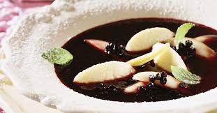

elderberry soup

Describtion
Recipe to cook an elderberry soup. Idial for wintertime.
Ingredients
- 1/2l water
- 1/2l elderberry suice
- 125g apples in slices
- lemon skin
- 10-20g Malzena
Steps
- Cook lemon skin with the water and the apple slices.
- Take out the apple sclice, once they are soft. Keep the applewater.
- Add Malzena and thicken the applewater.
- Add the elderberry suice.
- Once everything is hot add again the apple slices.